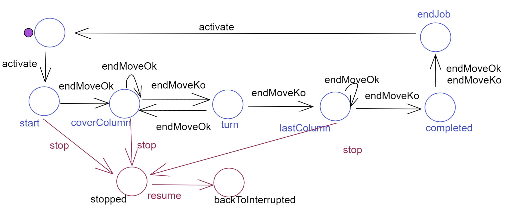

RobotCleanerWeb¶
Ci poniniamo l’obiettivo di creare una WebApplication con SpringBoot che mostri agli utenti una pagina HTML come quella di figura:
{kind=link}
La business logic è nel prototipo RobotCleaner
Obiettivo della applicazione Spring è solo quello di offrire una GUI. Tutta la logica applicativa è già stata realizzata (e testata) e può essere resa disponibile mediante un file
jar.
Una WebConsole per il RobotCleaner¶
Chi crea il componente applicativo?
Vi sono due modi principali:
Modo remoto: Il componente applicativo viene allocato su un nodo diverso da quello che ospita l’applicazione Spring
Modo locale: Il componente applicativo viene creato dalla applicazione Spring stessa
WORKTODO: discutere i pro/contro dei due modi
In questa sezione continueremo ad usare il progetto denominato webForActors introdotto in Primi passi con SpringBoot.
RobotCleanerGui.html¶
Inseriamo il file
RobotCleanerGui.htmlnella directory templates.
Qyesto file definisce la struttura della pagina HTML, suddivisa in due zone:
area Condigurazione e comandi: questa zona realizza un dispositivo di input, con cui l’utente può inviare comandi al server
<h4>Commands to the RobotCleaner</h4> ... <table> <table style="width:50%"> <tbody> <!-- the form-data is sent to the page specified in the action attribute --> <tr> <td > <form action="robotcmd" method="post"><button name="cmd" value="t">start</button></form></td> <td> <form action="robotcmd" method="post"><button name="cmd" value="stop">stop</button></form></td> <td> <form action="robotcmd" method="post"><button name="cmd" value="resume">resume</button></form></td> </tr> </table> </center> </td>
Display Area: questa zona realizza un dispositivo di output, in cui visualizzare informazioni di stato (mediante una WebSocket).
<h3>DISPLAY AREA</h3> <div id = "display"></div>L’aggiornamento della DisplayArea verrà realizzato da codice JavScript (si veda più avanti: wsminimal.js).
Un controller per la RobotCleaner Appl¶
Commentiamo l’annotazione @Controller in HIControllerDemo e inseriamo un nuovo controller HIController
package it.unibo.webspring.demo;
import ...
@Controller
public class HIController {
private static final String robotCmdId = "move";
private static String robotName = "cleaner";
private String mainPage = "RobotCleanerGui";
public HIController(){ }
Il controller HIController gestisce:
le richieste (HTTP-GET) di apertura della pagina:
@GetMapping("/") public String homePage(Model model) { model.addAttribute("arg", appName); return mainPage; }
le informazioni di configurazione inviate con metodi HTTP-POST, quando l’utente (umano) preme il pulsante Configure
//Dopo click sul pulsante Configure @PostMapping("/configure") public String configure(Model viewmodel, @RequestParam String move, String addr ){ createRobotCleaner(); //Modo locale per la Business logic: ConnQakBase connToRobot = ConnQakBase.create( ProtocolType.tcp ); conn = connToRobot.createConnection(addr, 8083); return mainPage; }
La classe
ConnQakBaseè una utility per creare connessioni al Robot con un dato protocollo.i comandi inviati con metodi HTTP-POST, quando l’utente (umano) preme i pulsanti start / stop / resume
//Dopo click sul pulsante start/stop/resume @PostMapping("/robotcmd") public String doMove(Model viewmodel, @RequestParam String cmd){ if( cmd.equals("t")){ //Start Qak22Util.sendAMsg( SystemData.startSysCmd("hicontroller",robotName) ); }else{ try { String msg = moveAril(cmd).toString(); conn.forward( msg ); } catch (Exception e) {... } } return mainPage; }
Notiamo che:
il pulsante start invia un comando (
cmd) con valore t, a fronte della form HTML<form action="robotcmd" method="post"> <button name="cmd" value="t">start</button> </form>
i pulsanti stop/resume inviano un comando (
move) con valore uguale al nome del pulsante:<form action="robotcmd" method="post"> <button name="cmd" value="stop">stop</button> </form>
{kind=link}
RobotCleaner: display area¶
Affrontiamo ora un nuovo requisito:
DisplayaAreaUpdate: Il
RobotCleanerdeve fornire informazioni di stato che la pagina Web deve visualizzare nella DisplayArea.
DisplayArea: analisi del problema¶
La nostra analsisi parte tenendo conto dei seguenti vincoli (requisiti non funzionali):
Per i principi delle CleanArchitecture, il
RobotCleanernon deve avere conoscenza di questo nuovo requisito e non deve avere alcuna dipendenza verso la parte Web.L’aggiornamernto della pagina Web dovrebbe avvenire in modo asincrono, senza ricorso al polling.
Questi due vincoli, presi insieme, implicano che:
il
RobotCleanernon deve rispondere a richieste volte a conoscere il proprio stato. Piuttosto deve essere un ente osservabile, cioè capace di emettere informazioni utili per componenti software interessati, anche ‘alieni’, cioè non-attori;il WebServer, responsabile dell’aggiornamento della pagina Web, dovrebbe operare come un ‘alieno’, osservatore del
RobotCleaner;in quanto osservatore interessato alle informazioni emesse dal
RobotCleaner, il WebServer non deve essere vincolato a risiedere sullo stesso nodo di elaborazione delRobotCleanerla pagina Web deve essere aggiornata usando le WebSocket
DisplayArea: architettura¶
L’architettura logica di riferimento può essere rappresentata come nella figura che segue:
{kind=link}
Il componente WebSocketHandler nasce da quanto esposto in Configurazione con WebSocketConfigurer (si veda Configurazione lato Server ).
DisplayArea: piano di lavoro¶
Al termine della analisi, riteniamo opportuno proporre il seguente piano di lavoro:
SPRINT1(ws): impostare il WebServer in modo da utilizzare connessioni mediante WebSocket con i client collegati, mediante il framework SpringBoot (a tal fine si veda WebSockets in SpringBoot).SPRINT2(udapte): realizzare ilRobotCleanercome emettitore di eventi percepibli dal WebServer.
Gli obiettivi (Goals) di ciascun SPRINT, possono essere definiti come segue:
nello
SPRINT1(ws): realizzare il filewsminimal.js, il componenteWebSocketHandlere verificare che il WebServer sia in grado di inviare informazioni sulla DisplayArea;nello
SPRINT2(update): realizzare un meccanismo/supporto che permetta all’attoreRobotCleanerdi emettere informazioni che possano essere ricevute dal WebServer (in particolare dalWebSocketHandler) in modo che possano essere visualizzate nella DisplayArea. Nella figura della architettura, questo meccanismo è relativo alla freccia tratteggiata.
La valutazione di complessità ci porta a indicare lo SPRINT2(update) come più rischioso e difficile, in quanto
richiede progettazione ad hoc, mentre lo SPRINT1(ws) richiede ‘solo’ lo studio delle
WebSockets in SpringBoot.
SPRINT1(ws)¶
Per gestire le due aree (di input/output) introdotte in RobotCleanerGui.html, la pagina si avvale di jquery
e del codice JavaScript defnito nel file wsminimal.js
con cui la pagina si connette a una WebSocket su localhost:8085 e riceve dati (metodo onmessage)
che visualizza nella Display Area.
wsminimal.js¶
const messageWindow = document.getElementById("display");
function sendMessage(message) {
var jsonMsg = JSON.stringify( {'name': message});
socket.send(jsonMsg);
addMessageToWindow("Sent Message: " + jsonMsg);
}
function addMessageToWindow(message) {
//messageWindow.innerHTML += `<div>${message}</div>` //add
messageWindow.innerHTML = `<div>${message}</div>` //set
}
function connect(){
var host = "localhost:8085"; //document.location.host;
var pathname = "/"//document.location.pathname;
var addr = "ws://" +host + pathname + "socket" ;
// Assicura che sia aperta un unica connessione
if(socket !== undefined && socket.readyState !== WebSocket.CLOSED){
alert("WARNING: Connessione WebSocket già stabilita");
}
var socket = new WebSocket(addr);
socket.onopen = function (event) {
addMessageToWindow("Connected to " + addr);
};
socket.onmessage = function (event) {
addMessageToWindow(""+`${event.data}`);
};
return socket;
}//connect
connect()
Configurazione lato Server¶
Sul lato del WebServer, SpringBoot impone una Configurazione con WebSocketConfigurer che richiede la implementazione
dell’interfaccia WebSocketConfigurer e la registrazione di un gestore che estende la casse AbstractWebSocketHandler.
La nostra versione della classe WebSocketConfiguration che implementa WebSocketConfigurer,
offre un metodo static che restituisce il gestore registrato e il wspath:
public static final WebSocketHandler wshandler = new WebSocketHandler();
public static final String wspath = "socket";
In base a questa configurazione, il server risponderà a richieste inviate sulla WebSocket al seguente indirizzo:
ws://<serverIP>:8085/socket
IWsHandler e WebSocketHandler¶
Il nostro gestore è simile a quanto introdotto Il gestore WebSocketHandler; in più implementa la interfaccia:
public interface IWsHandler {
void sendToAll(String message);
}
Il metodo sendToAll permette di inviare informazioni a tutti i client collegati attraverso la WebSocket.
public class WebSocketHandler extends AbstractWebSocketHandler implements IWsHandler {
private final List<WebSocketSession> sessions = new CopyOnWriteArrayList<>();
...
@Override
protected void handleTextMessage(WebSocketSession session, TextMessage message) throws IOException {
sendToAll("echo:"+message.toString());
}
public void sendToAll(TextMessage message) throws IOException{
Iterator<WebSocketSession> iter = sessions.iterator();
while( iter.hasNext() ){
iter.next().sendMessage(message);
}
}
Per propagare un messaggio a tutti i client connessi attraverso la WebSocket, Il gestore WebSocketHandler tiene traccia delle sessioni in una struttura dati (sessions).
DisplayArea testing¶
Una prima verifica della soluzione proposta si articola su diverse situazioni:
in locale (entro la pagina): si visualizza un messaggio di avvenuta connessione col server tramite la WebSocket;
in remoto (informazioni da WebServer): si invia un messaggio di avvenuta configurazione da parte di Configurazione con WebSocketConfigurer;
@Configuration @EnableWebSocket public class WebSocketConfiguration implements WebSocketConfigurer { public static final WebSocketHandler wshandler=new WebSocketHandler(); public static final String wspath = "socket"; public WebSocketConfiguration(){ new Thread(){ //To test ws-connection public void run(){ wshandler.sendToAll("WebSocketConfiguration created" ); } }.start(); } ... }
da programma (connessioni su Ws): si crea un programma Java che utilizza WsConnection (la implementazione osservabile di L’interfaccia Interaction2021 sulle ws) per inviare comandi al WebServer.
In modo simile al
ClientUsingWsintrodotto in Esempi di uso di HttpConnection e WsConnection, definiamo un client che invia al WebServer la stringa “Hello from remote client”. Vedremo ricomparire la stringa come echo nella DisplayArea.Progetto: webForActors code: unibo.webForActors.ClientUsingWs.
SPRINT2(update)¶
Dal punto di vista logico, il RobotCleaner è stato modellato come un emettitore di Eventi,
ma il sistema si presenta come
eterogeneo: infatti non tutti i componenti del sistema seguono il modello ad Attori. In particolare:
il WebServer è progettato e costruito ‘al di fuori’ del modello ad Attori
Una soluzione sbagliata¶
Nel caso in cui il RobotCleaner sia attivato in Modo locale (si veda modiCreazione), una soluzione
possibile sarebbe introdurre codice supplementare nell’attore. Ad esempio:
public class RobotCleanerProject extends QakActor22FsmAnnot{
...
@State( name = "coverColumn" )
protected void coverColumn( IApplMessage msg ) {
...
WebSocketConfiguration.wshandler.sendToAll(""+msg);
}
}
Questa soluzione funziona ma è errata
Infatti crea una dipendenza dell’attore dalla tecnolgia usata per l’aggiornamento delle pagine Web.
Emettere e percepire informazione (eventi)¶
Per evitare che RobotCleaner subisca modifiche indebite, potremmo affrontare il problema
dell’osservabilità in tre modi:
Rendere ‘componenti alieni’ capaci di percepire eventi emessi da attori ActorQak e QakActor22.
Realizzare l’emissione di un evento da parte dell’attore
RobotCleanerutilizzando un protocollo publish-subscribe come MQTT. Il WebServer potrebbe iscriversi (subscribe) alla topic su cui l’attiore pubblica le informazioni.Rendere l’attore
RobotCleaneruna risorsa CoAP osservabile. Il WebServer potrebbe utlizzare un CoAP client per ricevere le informazioni di stato quando sono emeesse.
La infrastruttura degli attori QakActor22 è definita in modo da rendere possibili enatrambe le ultime due strade.
La infrastruttura degli attori ActorQak rende possibile anche la prima.
In questa sede, ci concentriamo sulla strada meno convenzionale, che considera le interazioni tra componenti distribuiti come uno scambio di rappresentazioni di risorse accessibili in stile REST.
Il compito è agevolato dal fatto che ogni attore ActorQak e QakActor22 è stato definito in modo da essere anche una risorsa CoAP osservabile come descritto in Attori come risorse CoAP.
RobotCleaner come risorsa CoAP¶
L’attore che realizza il RobotCleaner costituisce una risorsa CoAP-osservabile , che viene
aggiornata usando il metodo updateResourceRep. La dipendenza indebita si prima viene così superata come segue:
public class RobotCleanerProject extends QakActor22FsmAnnot{
...
@State( name = "coverColumn" )
protected void coverColumn( IApplMessage msg ) {
...
//WebSocketConfiguration.wshandler.sendToAll(""+msg);
updateResourceRep(""+msg);
}
}
L’invocazione di updateResourceRep(M) provoca l’invio della stringa M a tutti i CoAP client connessi
alla risorsa.
Il configuratore MainRobotCleaner¶
La fase di configurazione sul WebServer che permette l’uso (in modo locale o in modo remoto)
del RobotCleaner deve ora creare un RobotCleanerObserver
che riceve un riferimento
al WebSocketHandler memorizzato in WebSocketConfiguration.wshandler.
Introdurremo la creazione del RobotCleanerObserver nel metodo di configurazione di HIController:
//Dopo click sul pulsante Configure
@PostMapping("/configure")
public String configure(Model viewmodel,
@RequestParam String move, String addr ){
createRobotCleaner(); //Modo locale per la Business logic:
ConnQakBase connToRobot =
ConnQakBase.create( ProtocolType.tcp );
conn = connToRobot.createConnection(addr, 8083);
RobotCleanaerObserver obs = new RobotCleanaerObserver("8083",robotName);
obs.setWebSocketHandler(WebSocketConfiguration.wshandler);
return mainPage;
}
Il RobotCleaner non dipende in alcun modo dalla WebApplication
Inoltre:
E’ il RobotCleaner che decide quali informazioni rendere visibili
RobotCleanerObserver¶
Il compito dell’osservatore del RobotCleaner è di creare un CoAP-client capace di ricevere le informazioni sui cambiamenti di stato
‘emesse’ dal RobotCleaner
(in quanto CoAP-resource) e invocare il metodo sendToAll del WebSocketHandler che
aggiorna la DisplayArea di tutti i client collegati.
public class RobotCleanaerObserver {
private CoapObserveRelation relation = null;
private CoapClient client = null;
private IWsHandler wsh ;
public RobotCleanaerObserver(String port, String actorName){
client=new CoapClient("coap://localhost:"+port+"/actors/"+actorName);
observe();
}
public void setWebSocketHandler(IWsHandler h){
wsh = h;
}
public void observe( ) {
relation = client.observe(
new CoapHandler() {
@Override public void onLoad(CoapResponse response) {
String content = response.getResponseText();
if( wsh != null ) wsh.sendToAll(content);
}
@Override public void onError() {
ColorsOut.outerr("OBSERVING FAILED (press enter to exit)");
}
});
}
Permanenza delle info nella DisplayArea¶
Purtroppo le informazioni inviate sulla WS non permangono visibili in quanto la pagina viene aggiornata dopo ogni comando. Per superare questo problema, possiamo inviare i comandi sulla WS stessa, invece che con HTTP-POST, realizzando di fatto una forma di Machine-to-machine (M2M) interaction.
Si provi ad esempio ad inserire nella pagina RobotCleanerGui.html una nuova area-comandi:
<h4>COMMAND-WS AREA</h4>
<button id="startws" >startWs</button>
<button id="stopws" >stopWs</button>
<button id="resumews" >resumeWs</button>
{kind=link}
Il file wsminimal.js vine arricchito con codice jQuery che invia comandi sulla WebSocket:
$(function () { //short-hand for $(document).ready(function() {...});
$( "#startws" ).click(function() { socket.send("start"); })
$( "#stopws" ).click(function() { socket.send("stop"); })
$( "#resumews" ).click(function() { socket.send("resume"); })
});
Premendo sui nuovi pulsanti, si vedranno comparire (come echo) i comandi,
ritrasmessi ai client dal metodo handleTextMessage di WebSocketHandler.
WORKTODO: realizzare i comandiWs
estendere il codice di
handleTextMessagedi WebSocketHandler in modo da inviare gli opportuni messaggi alRobotCleaner.
Nuove opportunità¶
Notiamo che, lanciando il programma unibo.webForActors.ClientUsingWs, questo visualizzerà tutte le informazioni emesse da
RobotCleaner.
Cio ci induce ad asserire che:
Abbiamo un meccanismo utile per il testing automatizzato
WORKTODO: aggiornare un log file delle variazioni di stato del RobotCleaner
Scrivere un programma Java (etserno alla WebApplication) che crea un Observer della CoAP-resource
RobotCleanerche aggiorna un file di log di tutte le informazioni emesse dal robot.